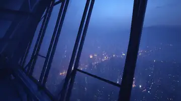
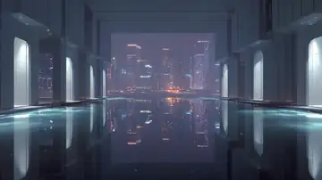
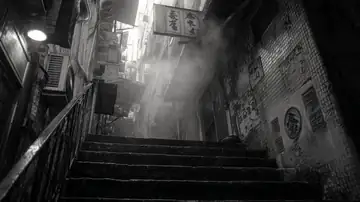
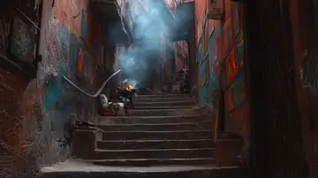
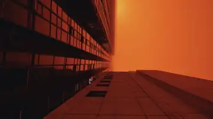
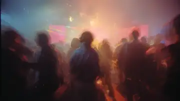
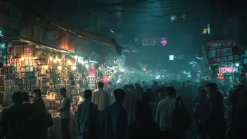
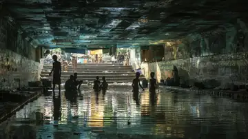

The Prompt Book — a thick prompt for each poem
A world model takes one long description at the start and only short cues after it. So the thickness goes in two places: the seed, which carries the style, the place, the two men, the light, the sound and the rules; and a brief the director model holds for every beat, which carries the cineosis operation and what must be seen. Generated from the treatment beats in cineosis-lab, the scene book, and the locks below.
The four locks are a first draft to be rewritten; they live in characters.json and every prompt below is rebuilt from them. Times are on the reading's clock; a minus sign is the lead-in before he speaks.
01 · Out of Life
the maze, the haze, the fall, the ember
A poet reads aloud to a lover's turned back; the vape haze claims the room, the lover falls off the fire escape, and the poet falls behind — out of life — until it gets as dark as black.
Thesis The way out he searches for (hallways, drawers, fire escapes) is the way down; leaving is not an exit but a direction.
Moods Disillusionment · Emptiness · Yearning · Loss · Anxiety · Desire for freedom · Quest for truth
Symbols Chiaroscuro tableaux · Labyrinths · Fire escapes · Fading rooms · Whispers (Sonsign) · Flickering portraits · Crystal-Images of otherworlds
Colour
Seed image candidates



099
042
045
061045
026 048
048 098
098
036
059
093 058
058Seed text — sent once, at the start (404 words)
STYLE. Afrofuturist Atlantis: a Black harbour city that kept its flood. Old walls carry a salt line at four metres. Ruins are mended in white ceramic seamed with light. Rusted teal steel, painted plywood, wet asphalt as a mirror. Photographic, 35mm, practical light sources, humid air. The future here is repaired and inherited, never chrome or sterile. Everyone in the city is Black, of every age; elders are present and honoured. Deep brown skin lit with full tonal range: a warm key, a rim light in the district's glow colour. Never crushed to a flat silhouette unless the beat asks for one. PLACE. Dim bedroom; Poet reads to an averted Ex. Ex on the fire escape. Television showing world chaos. POET reads the poem aloud to the EX; the TV shows the world's chaos. The severn, a high bedroom; the hive's needles fill the window. PEOPLE. THE POET: a Black man in his thirties, the one who speaks. Close-cropped hair, short beard. Always in matte black: fitted mock-neck long sleeve, black trousers, black boots. A thin seam of white light runs from his collar to over his heart, like mended ceramic; it brightens when he speaks. Unhurried, hands open. THE EX: a Black man of the same age, the man he loved and is leaving. Leaner and taller. Locs gathered at the nape. A long sodium-orange coat with a teal lining. A vape whose ember pulses cyan-white in his hand. Seen from behind or in profile; he turns his face to camera only when a beat says so. The two men were lovers. Their intimacy is shown by distance closing or opening, by hands, by foreheads, by who turns away. Tender and adult, never a spectacle, never a joke. OTHERS. None. LIGHT. evening into night; the fire escape at dusk. dense orange fog at every hour; the sun is a disc or nothing. low-pressure sodium (the New Boroughs): a single orange wavelength that greys every other colour. SOUND. engines ticking under the decks, a far train, your own steps on concrete. Under it, room for one man's speaking voice. MOOD. Disillusionment, Emptiness, Yearning, Loss, Anxiety, Desire for freedom. Close, dim and withholding; yearning becomes spatial distance. RULES. haze: seeds at the window, claims the room left-to-right, becomes the sky he falls through. the-gap: 24px between the falling bodies; it breathes +-3 and never closes. words: his own lines fall beside him as tumbling dashes.
Beats — a thin cue for the world, a thick brief for the director
| Time | Cue sent (12 words) | Operation the director holds | Must be seen |
|---|---|---|---|
| −0:29.8 hold | Dim bedroom; Poet reads to an averted Ex POET + EX | Bind the room to the Poet’s sightline; hold the Ex’s back as an unavailable reverse shot.Solid perception · Milieu | reading Poet · turned back · bedroom window · black T-shirtto design: Shoot the named performers; source room, window and light plates. |
| −0:18.2 split | Ex on the fire escape EX | Keep the distant body small within the building; enfeeblement requires more than small scale.Figure of enfeeblement · Solid perception | fire escape · distant figure · high-rise facadeto design: Back-facing Ex and the high-rise geography need continuity. |
| −0:10.5 inset | Television showing world chaos | Nest the news image within the bedroom; a single screen is only a first layer of mise en abyme.Mise en abyme · Lectosign | television cabinet · inset news · dim roomto design: Composite selected news-like fragments into a television; do not label nesting alone recursive. |
| −0:02.9 dissolve | Vapour erases the room | Let spatial coordinates dissolve, then hold the lost orientation without immediate action.Any-space-whatever · Opsign | vapour · window light · dissolving roomto design: Vape origin, actor and room require a composite; generic smoke is a plate. |
| 0:04.8 split | Window approaches while Ex recedes EX | Change perceived distance without resolving the camera’s approach; an ambiguous dream transition can begin here.Liquid perception · Restrained dream | receding window · corridor · unreachable backto design: Impossible recession needs camera choreography or compositing. |
| 0:16.4 montage | Ex falls, Poet follows into clouds POET + EX | Use a marked fall as the threshold into a dream-world, then decide whether any secure waking exterior survives.Rich dream · Movement of world | two falling bodies · cloud field · persistent gapto design: Two identifiable bodies and no visible Ex face require original or composited figures. |
| 0:27.9 black | Black and title card | Use black as an interval in which the poem or breath persists independently; literal title reading alone is not a lectosign.Lectosign · Sonsign | black field · exact title · breath intervalto design: Build the exact title card; sound relation must be designed. |
| 0:31.7 montage | World chaos interrupts the fall | Let heterogeneous scales disrupt the privileged perceiver; crisis is an assembly relation, not disaster imagery alone.Gaseous perception · Extreme limit of the action-image | ruins · explosions · conflicting scalesto design: Select several fragments; preserve the distinction between historic footage and fictional world. |
| 0:39.4 inset | Escapism: drugs and intoxication | Test whether a drive overpowers the body and attaches to a partial object; consumption alone is insufficient.Symptom · Fetish | cigarette · glass · hand · repeated consumptionto design: Avoid treating all drinking or smoking as evidence of compulsive impulse. |
| 0:47.1 montage | Escapism: party, television and phone | Build a recurring escape pattern so that its later interruption has an established series to break.Mark · Demark | party · television · telephone · repeated escapeto design: Modern phone use may require new footage; archival telephones are period substitutes. |
| 0:54.8 hold | Crash into the vintage party | Make the shift from falling to ballroom unmistakable; the party supplies a new determinate milieu.Rich dream · Milieu | vintage dance floor · arriving body · crowdto design: Crash transition and actor insertion need effects; retain vintage party texture. |
| 1:06.3 split | Romantic slow motion and light leaks | Alternate collective intensity with distinct faces; slow motion alone does not create a dividual.Dividual · Icon | feet · dancers · slowed movementto design: Speed and light-leak treatment can be added editorially. |
| 1:14.0 inset | Chase Ex through the crowd EX | Build a trajectory through partial spaces; use a misrecognised back only if it genuinely supports two situations.Vector · Index of equivocity | back-facing Ex · crowd · passageto design: Maintain Ex’s back and disappearance; do not invent a face match. |
| 1:21.7 montage | Photographs, film and fiction as memory inserts | Let images solicit memory without prematurely fixing its causal meaning; old photographs alone are not sheets of past.Weak destiny · Sheets of the past | old photograph · remembered gathering · paper surfaceto design: Optional insert from poem column; distinguish from the right-column staging. |
| 1:29.4 dissolve | Floor opens; Poet falls into black POET | Break the party’s geography through an impossible passage; action loses its stable environment.Movement of world · Extreme limit of the action-image | falling body · floor · black intervalto design: Actor-specific fall and hole require a composite. |
02 · Flashing Lights
the scream that travels inward
Floating in black between caving walls, a poet's eyes dilate until the pupil swallows the frame — and inside is age six: a window, a winding road, arguing headlights, a ghost with a tambourine, and the first throw.
Thesis The silent scream and the silent call are the same instrument; the tambourine is the first time the poet answers noise with noise.
Moods Anxiety · Helplessness · Despair · Desensitization · Child-like fear · Desire to escape · Self-preservation · Emotional numbness
Symbols Headlights · Sirens · Flashing lights · Walls caving · Exploding stars (concussion) · Broken rings/chains · Crumbled paper hearts · VHS static · Ghost children · Ticking clocks · Empty roads
Colour
Seed image candidates


 096
096 057
057Seed text — sent once, at the start (389 words)
STYLE. Afrofuturist Atlantis: a Black harbour city that kept its flood. Old walls carry a salt line at four metres. Ruins are mended in white ceramic seamed with light. Rusted teal steel, painted plywood, wet asphalt as a mirror. Photographic, 35mm, practical light sources, humid air. The future here is repaired and inherited, never chrome or sterile. Everyone in the city is Black, of every age; elders are present and honoured. Deep brown skin lit with full tonal range: a warm key, a rim light in the district's glow colour. Never crushed to a flat silhouette unless the beat asks for one. PLACE. Poet floats in black under flashes. POET in black space, falling or floating, lights flashing; EX in distress floats nearby, unreachable. The black below the floor. PEOPLE. THE POET: a Black man in his thirties, the one who speaks. Close-cropped hair, short beard. Always in matte black: fitted mock-neck long sleeve, black trousers, black boots. A thin seam of white light runs from his collar to over his heart, like mended ceramic; it brightens when he speaks. Unhurried, hands open. THE EX: a Black man of the same age, the man he loved and is leaving. Leaner and taller. Locs gathered at the nape. A long sodium-orange coat with a teal lining. A vape whose ember pulses cyan-white in his hand. Seen from behind or in profile; he turns his face to camera only when a beat says so. The two men were lovers. Their intimacy is shown by distance closing or opening, by hands, by foreheads, by who turns away. Tender and adult, never a spectacle, never a joke. OTHERS. GHOST CHILD: shade-2 glow, feet dissolving above the floor; flickers in, whispers, dissolves, returns, hugs; PARENTS: two 2px heads behind a lit rear window; their screams drawn as zigzags of light LIGHT. after midnight. none. flashing lights, then the warm leak of the vintage party. SOUND. the drone record. Under it, room for one man's speaking voice. MOOD. Anxiety, Helplessness, Despair, Desensitization, Child-like fear, Desire to escape. Hard light against black; vulnerability alternates with sensory assault. RULES. light: the only ink: sweeps, cones, glow, cracks — the dark is the paper. the-pupil: dilation as door; the film passes through an eye to reach the past. the-road: winds down inside the window and inside the phrase.
Beats — a thin cue for the world, a thick brief for the director
| Time | Cue sent (12 words) | Operation the director holds | Must be seen |
|---|---|---|---|
| −0:04.6 hold | Poet floats in black under flashes POET | Suspend the body in a field without practical coordinates; hold the optical situation beyond a response.Any-space-whatever · Opsign | suspended body · black space · thin lightto design: Black-space floating needs effects; retrieved flashes are lighting material. |
| 0:09.0 split | Unreachable Ex in distress EX | Let an intensive face or bodily reach fail to become effective contact; keep the Ex’s face hidden.Icon · Figure of enfeeblement | distant curled figure · unreachable gapto design: Use Poet’s face for icon; do not violate the Ex’s back-only rule. |
| 0:18.1 inset | Dilating eyes in darkness | Move from facial intensity into a subjective aperture; the close-up and POV perform different operations.Icon · Solid perception | eye · dilating pupil · eyelidto design: Pupil dilation and passage through the eye may require macro footage and effects. |
| 0:27.2 dissolve | Enter childhood through the eye | Use the eye transition to actualise a past; determine whether it explains or merely complicates present grief.Strong destiny · Weak destiny | eye doorway · child · remembered roomto design: Matching child performer and eye transition require original work. |
| 0:36.4 montage | Young Poet watches headlights sweep the room POET | Bind the light to the child’s viewpoint; an imprint requires accumulated pressure and later behavioural consequence.Solid perception · Imprint | headlights · night road · child at windowto design: Night window and moving headlights can be assembled from separate plates. |
| 0:45.5 split | Parents argue inside a parked car PARENTS | Stage two opposed lines of force, then expose the question the child cannot answer.Binomial · Limit of the large-form action-image | two parents · car rear window · argumentto design: Relationship and location must be inferred from sequence, not facial tension alone. |
| 0:59.1 dissolve | Ghost child appears, embraces Poet POET + GHOST CHILD | Place an actual child and virtual visitor in a circuit; a superimposition alone does not establish indiscernibility.Mirrors face-to-face · Restrained dream | ghost child · dissolving feet · embraceto design: Ghost performer and embrace need a controlled composite. Preserve the ghost’s disappearance as well as its appearance, embrace and prop exchange. |
| 1:12.8 inset | Ghost gives the tambourine | Make the instrument gather relational meaning; fetish remains conditional on an impulse stored in it.Symbol · Fetish | tambourine · small hand · giftto design: Exact prop and exchange are likely an original insert. |
| 1:21.9 montage | Tambourine through the window | Let the thrown object disclose the intolerable situation; establish the preceding pressure if reading it as imprint.Index of lack · Imprint | open window · thrown ring · releaseto design: Throw, shatter and matching tambourine require a practical or effects insert. |
03 · How to Break off an Engagement
the storm takes everything that was ever called goods
The tambourine thrown at age six flies into a chapel still whole, waits at the altar step through the cobwebs, and a time-lapse storm takes the building down to two stubs and a doorway — then the storm ends, the film turns white, and the tambourine falls one last time and shatters among two sets of footprints.
Thesis An engagement is broken the way a chapel decays: first the cross tilts, then the roof, then the register of the world itself — and the gift that started it all only breaks after everything it was thrown at is gone.
Moods Disillusionment · Emptiness · Desolation · Cleansing · Resignation · Sadness · Seeking liberation · Confronting lost ideals · Rebuilding life · Self-redefinition
Symbols Diamond ring on crack · Fraying infinity symbol · Empty temple/choir/pools · Spiderwebs · Faint ashes · Crumbling pillars · Halo-like rings (dimming) · Torn wrapping paper · Parcels outside doors · Stone threshold cracked · Thunder/Rain · Fading photographs · "Return to sender" boxes · Shattered tambourine · Rotting bread · Soiled blankets · Divergent footprints · Lightning
Colour
Seed image candidates


 097
097 014
014Seed text — sent once, at the start (347 words)
STYLE. Afrofuturist Atlantis: a Black harbour city that kept its flood. Old walls carry a salt line at four metres. Ruins are mended in white ceramic seamed with light. Rusted teal steel, painted plywood, wet asphalt as a mirror. Photographic, 35mm, practical light sources, humid air. The future here is repaired and inherited, never chrome or sterile. Everyone in the city is Black, of every age; elders are present and honoured. Deep brown skin lit with full tonal range: a warm key, a rim light in the district's glow colour. Never crushed to a flat silhouette unless the beat asks for one. PLACE. Tambourine tumbles in black. The tambourine falls, flies, tumbles through black space and enters the chapel through a window, still whole. The chapel's seaward lancet. PEOPLE. THE POET: a Black man in his thirties, the one who speaks. Close-cropped hair, short beard. Always in matte black: fitted mock-neck long sleeve, black trousers, black boots. A thin seam of white light runs from his collar to over his heart, like mended ceramic; it brightens when he speaks. Unhurried, hands open. OTHERS. THE TAMBOURINE: the only actor: ring of light in the dark register, ring of ink in the white; one jangle per rotation; eight jingles at the end; THE CHAPEL: a damage schedule: cross 0.25, spire 0.45, roof 0.55-0.7, walls 0.8; rubble accumulates at the base LIGHT. a time-lapse across a day, ending in storm. storm then calm; mist on the sea; dew burning off. the white ceramic itself, lit by the sky; mirror pools that hold the stars. SOUND. the bell that is gone, rain on stone, choir chords, laughter. Under it, room for one man's speaking voice. MOOD. Disillusionment, Emptiness, Desolation, Cleansing, Resignation, Sadness. Abandoned ceremonial space; decay gives way to a pale, emptied shore. RULES. the-inverted-frame: every thunderclap is one frame of the opposite register — the storm rehearses the ending. the-inventory: empty choir stands, abandoned baptism pool, opened gift boxes at the side door — the poem's own list, drawn. the-footsteps: two tracks writing themselves toward the water while nobody walks.
Beats — a thin cue for the world, a thick brief for the director
| Time | Cue sent (12 words) | Operation the director holds | Must be seen |
|---|---|---|---|
| −0:05.4 montage | Tambourine tumbles in black THE TAMBOURINE | Carry the object through discontinuous worlds; repeated returns can establish its habitual relation.Movement of world · Mark | spinning tambourine · jingles · dark skyto design: Isolated rotating prop over black is a planned effects shot. |
| 0:03.6 inset | Object enters chapel through intact window THE CHAPEL | Preserve the uncertain relation between broken and intact glass; it is equivocal only if both situations remain viable.Index of equivocity · Movement of world | rose window · intact glass · flying ringto design: Composite the tambourine and intact window transition. |
| 0:12.7 hold | Empty chapel: pews, choir, baptism pool THE CHAPEL | Empty the social function of each space; hold the optical duration rather than merely establish a location.Any-space-whatever · Opsign | empty choir · baptism pool · opened gifts · cobwebsto design: Multiple interiors may require a constructed geography. |
| 0:26.3 dissolve | Accelerated chapel decay THE CHAPEL | Measure construction and erosion against human action; time-lapse itself is not a chronosign.Figure of the sublime · Quotidian | tilting cross · roof · broken pillars · rubbleto design: No exact matched decay is presumed; use ruin plates plus staged or procedural decay. |
| 0:39.9 split | Thunderstorm consumes the chapel THE CHAPEL | Give the storm an independent acoustic duration; originary world requires forces beneath a social milieu, not weather alone.Sonsign · Originary world | lightning · rain · crumbling chapelto design: Storm sound must be auditioned separately; destruction needs compositing. |
| 0:48.9 hold | Storm clears onto shoreline ruins | Keep the aftermath as an unresolved optical situation before the next task begins.Opsign · Any-space-whatever | two ruined walls · doorway · shorelineto design: An exact chapel-on-shore setting may need a composite. |
| 1:02.5 montage | Tambourine lands and shatters THE TAMBOURINE | Break the recurring object’s established integrity; its symbolic relation must survive across appearances.Demark · Symbol | shattered tambourine · two footprint trails · tideto design: Original prop break or effects insert needed. |
04 · Nevermore
a trail followed twice, a vow made twice
In red and black, hands in pockets, a poet walks the shore of everything that broke, lets a heart lift itself back into his chest, follows the trail into a night that falls through the film's own register, and searches a bare field until his hands — they too used to be his — return, and the arms are drawn for the first time.
Thesis Recovery is not retrieval: the heart and the hands come back on their own terms, and the self's only work is to walk, kneel, and receive — nevermore said once per organ.
Moods Solitude · Reflection · Determination · Peace · Quiet confidence · Vulnerability (initial search) · Desire for self-reclamation · Overcoming past suffering · Seeking authenticity · Embracing inner wholeness
Symbols Broken pieces/Ashes/Debris · Night seawater's floor · Calm whispers/Muted trees/Silence · Throbbing heart/Familiar heart/Reclaimed heart/Dusk settled heart · Sad blue note · Puzzle pieces of faith/Mustard seeds · Moonlit night’s garden fields/Golden hue plants · Weeds/Memories hide · Two hands/Dusted hands · "Nevermore" (Mantra) · Lost soul/Won at the world
Colour
Seed image candidates


 037
037 065
065 071
071Seed text — sent once, at the start (361 words)
STYLE. Afrofuturist Atlantis: a Black harbour city that kept its flood. Old walls carry a salt line at four metres. Ruins are mended in white ceramic seamed with light. Rusted teal steel, painted plywood, wet asphalt as a mirror. Photographic, 35mm, practical light sources, humid air. The future here is repaired and inherited, never chrome or sterile. Everyone in the city is Black, of every age; elders are present and honoured. Deep brown skin lit with full tonal range: a warm key, a rim light in the district's glow colour. Never crushed to a flat silhouette unless the beat asks for one. PLACE. Heartless Poet surveys the shore. POET stands on the shore at night, hands in pockets, no heart; walks looking at the decay and shattered pieces as ravens fly overhead. The shore below the rail, where the chapel's pieces washed east. PEOPLE. THE POET: a Black man in his thirties, the one who speaks. Close-cropped hair, short beard. Always in matte black: fitted mock-neck long sleeve, black trousers, black boots. A thin seam of white light runs from his collar to over his heart, like mended ceramic; it brightens when he speaks. Unhurried, hands open. OTHERS. THE HEART: a 3px pulse that travels home in a shallow arc; THE HANDS: two glowing mitts with finger ticks; the only shade-0 objects on the ground; RAVENS: three flying over the shore; two perched to wait out the search LIGHT. twilight deepening to full dark; moonlight. wet stone, mist on the sea, a low sun. none of its own: dawn and dusk; a few lanterns on the steps; one sodium platform lamp left from the New Boroughs. SOUND. the motorcycle; water dripping in the arches; birds at first light. Under it, room for one man's speaking voice. MOOD. Solitude, Reflection, Determination, Peace, Quiet confidence, Vulnerability (initial search). Patient and solitary; small false glints delay the bodily restoration. RULES. the-register-descent: dusk as formal device: the film darkens in steps and crosses to black mid-beat. no-arms: the figure system withholds arms for five beats; their return IS the climax. golden-heads: shade 0-1 plant heads leaning toward his x every frame — anticipation drawn literally.
Beats — a thin cue for the world, a thick brief for the director
| Time | Cue sent (12 words) | Operation the director holds | Must be seen |
|---|---|---|---|
| −0:04.9 hold | Heartless Poet surveys the shore POET + THE HANDS | Let walking, pause and bodily absence carry duration before restoration becomes an action goal.Body of attitude · Opsign | solitary Poet · shore · hidden handsto design: Preserve red/black costume, sunglasses and hidden hands with original performance. |
| 0:15.5 montage | Ravens over debris and footprints RAVENS | Use a track only if following it discloses the missing situation; birds can acquire relations through recurrence.Index of lack · Symbol | ravens · footprints · folded paperto design: Ravens, tracks and shoreline can be separate inserts. |
| 0:29.0 inset | Heart floats from shore into Poet POET + THE HEART | Test the heart as charged partial object; seed/environment requires reciprocal crystallisation, not simply restoration.Fetish · Seed and environment | heart · chest · luminous returnto design: Heart and re-entry require VFX; medical imagery is only object reference. |
| 0:49.4 dissolve | Follow a trail uphill toward the field | Assemble partial paths into a rigorous trajectory; keep the actor’s relation to scale explicit.Vector · Figure of enfeeblement | trail · mountain ridge · mustard seedsto design: Match screen direction, light and costume across landscape plates. |
| 1:09.7 montage | Golden plants turn toward Poet; weeds withdraw POET | Make the environment respond and transform; use seed/environment only if the reciprocal virtual relation is developed.Movement of world · Seed and environment | golden plant heads · leaning stems · passing figureto design: Responsive golden plants and retreating weeds need animation or effects. |
| 1:23.3 hold | Clouds extinguish the stars | Remove visual coordinates while sound holds the scene; darkness alone proves neither sign.Any-space-whatever · Sonsign | dark clouds · obscured trail · fading lightto design: Night sky plate plus sonic design. |
| 1:36.9 inset | Search bare ground for lost hands POET + THE HANDS | Let searching actions reveal the absent part; distinguish a bodily partial object from ordinary found-object symbolism.Index of lack · Fetish | soil · false glints · missing handsto design: Detached hands and performer continuity require effects. |
| 1:50.4 hold | Hands restored; Poet stands reflecting POET + THE HANDS | Hold posture after restoration; distinguish thought through bodily attitude from a causal trace that drives another act.Body of attitude · Imprint | restored hands · open palms · same performerto design: Shoot the reattachment and the quiet aftermath separately. |
05 · Bloodline
he names the stars after the people who made him
Told NOW GO, the poet walks into a parade of crowned ancestors who hand him stars to name, lower a galaxy into his returned hands, hover his basement childhood in the sky as a white lit room, run their blood through his fingerprint whorls until his voice drops to a baritone of a million cries — and open marble gates with wings to welcome him through.
Thesis Inheritance is not received but conducted: the blood is an orchestra, the stars take new names, and the gates only open for a body that has already gotten its heart and hands back.
Moods Burdened aspiration · Quiet defiance · Solemn determination · Inherited melancholy · Righteous indignation · Yearning for agency · Seeking cosmic permission · Transforming inherited pain · Asserting personal power · Giving voice to the unspoken
Symbols Earth/Stars/Galaxies/New universe · Humid basements/Mattress pads/Wood beams (uncomforting) · Forbidden lines/Battered & bruised history · Tears that spoke · Blood/Hands/Fingerprints · Sun-kissing skin · Deepening voice/Baritone of a million cries/Unanswered plight · "Beware of me." · "To dream was to prevail."
Colour
Seed image candidates


 009
009 076
076Seed text — sent once, at the start (341 words)
STYLE. Afrofuturist Atlantis: a Black harbour city that kept its flood. Old walls carry a salt line at four metres. Ruins are mended in white ceramic seamed with light. Rusted teal steel, painted plywood, wet asphalt as a mirror. Photographic, 35mm, practical light sources, humid air. The future here is repaired and inherited, never chrome or sterile. Everyone in the city is Black, of every age; elders are present and honoured. Deep brown skin lit with full tonal range: a warm key, a rim light in the district's glow colour. Never crushed to a flat silhouette unless the beat asks for one. PLACE. Ancestral parade receives Poet. POET stands in the field with his newly restored hands; the parade's first figures appear on the path ahead (inferred blocking). The field's edge where 04 ended. PEOPLE. THE POET: a Black man in his thirties, the one who speaks. Close-cropped hair, short beard. Always in matte black: fitted mock-neck long sleeve, black trousers, black boots. A thin seam of white light runs from his collar to over his heart, like mended ceramic; it brightens when he speaks. Unhurried, hands open. OTHERS. ANCESTORS: crowned A-robes, shade 2 with shade-0 crowns; three offer stars, two flank the gates with arms up; THE GALAXY: a two-arm spiral on the ORBIT lookup; its invented twin counter-rotates; THE BASEMENT: a white window in the night: three pine beams, a mattress pad, a slit of light, humidity on the walls LIGHT. still night, deep starlight. windless; deep starlight; moon. none: stars, the gifts in their hands, the moon. SOUND. the parade's orchestra arriving from the far edge; no wind. Under it, room for one man's speaking voice. MOOD. Burdened aspiration, Quiet defiance, Solemn determination, Inherited melancholy, Righteous indignation, Yearning for agency. Solemn inheritance with growing defiance; scale expands from body to cosmos. RULES. gifts-descending: star (2px) to galaxy (spiral) to universe (twin spirals) — scale as blessing. the-white-window: memory as the only white surface in a black film. it-didnt: the middle beam sags twice, on cue with the line.
Beats — a thin cue for the world, a thick brief for the director
| Time | Cue sent (12 words) | Operation the director holds | Must be seen |
|---|---|---|---|
| −0:11.8 montage | Ancestral parade receives Poet POET + ANCESTORS | Keep collective feeling and distinct attitudes visible; gest asks how the arrangement articulates social relations.Dividual · Body of gest | ancestral procession · distinct faces · cosmic scaleto design: Historical community footage cannot be claimed to depict these named fictional ancestors. |
| 0:21.3 split | Ancestors offer stars and galaxies POET + ANCESTORS + THE GALAXY | Treat the cosmic gift as an excessive project or a seed of a world; the relation must be constructed in the edit.Figure of the sublime · Seed and environment | descending star · galaxy · offering handsto design: Afrofuturist figures, gifts and universe objects require original design and composites. |
| 0:46.1 dissolve | Childhood basement, shared mattress, southern wood THE BASEMENT | Locate an inherited social milieu and return to it as an uncertain recollection.Milieu · Weak destiny | childhood room · pine · memory windowto design: Optional poem-column insert; do not manufacture a biographical archival claim. |
| 1:02.6 inset | Blood and fingerprints carry ancestral power POET | Link hand, genealogy and world as a thought relation; scientific diagrams alone are not cinema of the brain.Symbol · Cinema of the brain | skin · fingerprints · inherited marksto design: Optional poem-column insert; body effects and genealogy need authored linkage. |
06 · Resurrecting Atlantis
a city comes up out of the water
Down a road that lights its own bricks, past comets all pointing one way, the poet watches a drowned city let go of its water, pays the gate with one of his named stars, wanders streets where every joyful noise blooms a rainbow, stands in a plaza until the whole city blinks with his heart — and follows the music into a house.
Thesis A city born in unison out of the purest of fictions is entered the way faith is: you pay with something you were just given a name for, and the light at the door costs you your own.
Moods Awe · Hope · Unity · Peace · Serenity · Collective evolution · Harmonious living · Rediscovering lost potential · Seeking wisdom
Symbols DNA helixes · Celestial instruments · Ancient dreamers · Radiant city (Atlantis) · Light gates · Lush jungle/Crystalline cities · Bioluminescent heartbeat · Infinite hourglass · Stitched clouds · Hidden star-chart · Structures rising in unison · Parting sea · Ancient manuscript · Open arms
Colour
Seed image candidates


 062
062Seed text — sent once, at the start (329 words)
STYLE. Afrofuturist Atlantis: a Black harbour city that kept its flood. Old walls carry a salt line at four metres. Ruins are mended in white ceramic seamed with light. Rusted teal steel, painted plywood, wet asphalt as a mirror. Photographic, 35mm, practical light sources, humid air. The future here is repaired and inherited, never chrome or sterile. Everyone in the city is Black, of every age; elders are present and honoured. Deep brown skin lit with full tonal range: a warm key, a rim light in the district's glow colour. Never crushed to a flat silhouette unless the beat asks for one. PLACE. Winged marble gates open. Marble gates with wings swing open to an ancestral orchestra; a line of figures, the POET among them, walks through into the radiant city. The light gate, from the field. PEOPLE. THE POET: a Black man in his thirties, the one who speaks. Close-cropped hair, short beard. Always in matte black: fitted mock-neck long sleeve, black trousers, black boots. A thin seam of white light runs from his collar to over his heart, like mended ceramic; it brightens when he speaks. Unhurried, hands open. OTHERS. THE CANDLE: unsure of itself until it is paid; then a star; THE CITY: seven towers with a full submerged height, revealed by the drain; windows in blue-and-pink alternation (shades 1/3); THE QUEUE: three guests who cross the same glow and go dark the same way LIGHT. still night; warm-lit windows. clear. the gate's white ceramic lit from inside; fences of light at the perimeter (cyan, high-frequency). SOUND. the ancestral orchestra; the heart-scan's tone; ten thousand people breathing. Under it, room for one man's speaking voice. MOOD. Awe, Hope, Unity, Peace, Serenity, Collective evolution. Expansive, serene and welcoming; belonging is expressed through shared rhythms. RULES. currency: the star handed down in Film 05 spent here — inheritance become admission. the-drain: resurrection as subtraction: nothing rises, the covering falls. rainbow-noise: sound drawn as geometry: burst, then three bands.
Beats — a thin cue for the world, a thick brief for the director
| Time | Cue sent (12 words) | Operation the director holds | Must be seen |
|---|---|---|---|
| −0:04.9 hold | Winged marble gates open THE CITY | Let a material threshold figure a larger world; distinguish figurative enlargement from mere monumental scale.Plastic figure · Figure of the sublime | winged gates · marble · star as admissionto design: Atlantis gate is a designed composite. |
| 0:28.2 montage | Candlelit narrow streets, welcoming faces THE CITY | Establish the city then allow perception to migrate among residents; a moving camera alone is not liquid perception.Milieu · Liquid perception | narrow streets · night windows · welcoming cityto design: Use original Mexico City wandering footage where specified in the treatment. |
| 1:12.3 hold | Voiceover stops; wander toward a house | Let sight and ambient sound continue after explanatory voice withdraws; withholding voice alone does not prove the break.Opsign · Sonsign | house threshold · still figure · voice pauseto design: Needs an actual sound edit, not merely a mute visual plate. |
07 · DJ Turn Me Up
amplitude, and eleven petals
A DJ is lowered into the house on a beam of light, the needle rings the room, and the poet — eyes wide shut, chin nested down — tells the whole love story over a rising fader: ghosts in vineyards, rings diverging, a home trucked apart, eleven petals plunked off a daisy, three roads and one silver lining — until the chin nests high and the volume clips.
Thesis Being heard is a gain structure: the same story at level one is grief and at level eight is testimony — the fader, not the words, is what turns forth to face delights and shadows.
Moods Vulnerability · Despair · Defiance · Yearning for recognition · Need for voice · Asserting independence · Overcoming silence
Symbols DJ/Turntables/Microphone · Ghosts (Crystal-Image) · Fading vineyards · Broken hearts/rings · One-way streets · Blank billboards · Cosmic distances · Daisy petals · Heartbeat waveform
Colour
Seed image candidates


 073
073 017
017 084
084Seed text — sent once, at the start (343 words)
STYLE. Afrofuturist Atlantis: a Black harbour city that kept its flood. Old walls carry a salt line at four metres. Ruins are mended in white ceramic seamed with light. Rusted teal steel, painted plywood, wet asphalt as a mirror. Photographic, 35mm, practical light sources, humid air. The future here is repaired and inherited, never chrome or sterile. Everyone in the city is Black, of every age; elders are present and honoured. Deep brown skin lit with full tonal range: a warm key, a rim light in the district's glow colour. Never crushed to a flat silhouette unless the beat asks for one. PLACE. DJ appears, spins and scratches. Neon title over the booth; the DJ appears, spins, scratches; the fader slides and the crowd hushes waiting for the drop as the POET asks to be turned up. The house: the booth on the back wall. PEOPLE. THE POET: a Black man in his thirties, the one who speaks. Close-cropped hair, short beard. Always in matte black: fitted mock-neck long sleeve, black trousers, black boots. A thin seam of white light runs from his collar to over his heart, like mended ceramic; it brightens when he speaks. Unhurried, hands open. OTHERS. THE DJ: dropped in on a light beam; drawn scratching, hands only; THE FADER: the ninth character: present in every frame, level 1 to clipping; THE DAISY: eleven petals on the PET11 table, plunked on a fixed schedule; the center holds LIGHT. late night, the midnight booth. light rain, steam, teal haze. the Relighting: neon and string lights, candles in the alleys; teal and pink. SOUND. many radios, a kettle, the DJ through the walls, rain on corrugated roofs. Under it, room for one man's speaking voice. MOOD. Vulnerability, Despair, Defiance, Yearning for recognition, Need for voice, Asserting independence. Exposed and insistent; the performance moves from lowered chin to claimed voice. RULES. volume-as-form: the film's density is its loudness. projections: memory as outline panels in air — distinct from Film 05's white-filled window. we-love-we-not: alternating with each detachment; year eleven lands on LOVE.
Beats — a thin cue for the world, a thick brief for the director
| Time | Cue sent (12 words) | Operation the director holds | Must be seen |
|---|---|---|---|
| −0:04.9 inset | DJ appears, spins and scratches THE DJ | Connect staged performance to lived action; alternatively release scratching into a pure sonic situation.Theatrical figure · Sonsign | turntable · needle · record · lowered chinto design: Original part-one bar footage is an explicit source anchor; archive turntables are inserts. |
| 0:31.4 montage | Poet performs; audience responds POET | Alternate affective face, collective response and social gest without treating them as interchangeable.Icon · Dividual · Body of gest | Poet on stage · listening audience · raised chinto design: The Poet’s own performance is required; archive audiences are comparative or composite material. |
| 1:19.7 montage | Bands diverge; home splits; eleven petals | Build object relations across repeated departures; establish a series before claiming its interruption.Symbol · Plastic figure · Mark | diverging rings · home · eleven petalsto design: Optional poem-column montage; diverging rings and split homes need editorial construction. |
08 · Newly Single
a soul leaves a body on a dance floor
On a rooftop running faster than its own night, the poet's soul steps out of his body, watches all of Atlantis top-down, stands at the equator of a hotter planet, lets angels pour moon-salted ice baths over the husk he left dancing — then returns, leans back, breathes the whole room in, and at the railing holds a ring out over the edge and cannot let it go.
Thesis Separation is a frame-rate: the body grieves at the world's speed and the soul at its own — and what returns from the split is not relief but accuracy: what isn't mine, I still can not give.
Moods Liberation · Detachment · Vulnerability · Self-awareness · Curiosity · Desire for self-reclamation · Embracing solitude · Seeking new pleasures
Symbols Dance floor/Club lights · Escaping soul · Empty silhouette · Broken vinyl hearts · X-ray ribs · Planet equator · Ice baths · Digital scripture · Trance circles · Cosmic mountains · Infinity symbol
Colour
Seed image candidates


 021
021Seed text — sent once, at the start (352 words)
STYLE. Afrofuturist Atlantis: a Black harbour city that kept its flood. Old walls carry a salt line at four metres. Ruins are mended in white ceramic seamed with light. Rusted teal steel, painted plywood, wet asphalt as a mirror. Photographic, 35mm, practical light sources, humid air. The future here is repaired and inherited, never chrome or sterile. Everyone in the city is Black, of every age; elders are present and honoured. Deep brown skin lit with full tonal range: a warm key, a rim light in the district's glow colour. Never crushed to a flat silhouette unless the beat asks for one. PLACE. Rooftop club, strobe, shifted time. Mid-dance, a translucent soul rises out of the POET's chest and floats above; the emptied body keeps moving to the beat alone. The rooftop club on a spire crown (up the elevator shaft from the house). PEOPLE. THE POET: a Black man in his thirties, the one who speaks. Close-cropped hair, short beard. Always in matte black: fitted mock-neck long sleeve, black trousers, black boots. A thin seam of white light runs from his collar to over his heart, like mended ceramic; it brightens when he speaks. Unhurried, hands open. OTHERS. POET-BODY: two-tone until the split; then a single-shade husk on the fast clock, no bar, no pulse; POET-SOUL: a thin outline of light on the slow clock, carrying both named stars; ANGELS: two winged pourers on the slow clock, vessels tilted, streams converging on the husk; THE RING: six segments; trembles on every fourth frame; never crosses the railing LIGHT. deep night, city glow below. cloud below the platforms; clear above. violet and blue underlights on the stems; warm lamps on the platforms; the shaft's red. SOUND. wind; the club's bass carried up the shaft; the skiffs. Under it, room for one man's speaking voice. MOOD. Liberation, Detachment, Vulnerability, Self-awareness, Curiosity, Desire for self-reclamation. Restless bodily rhythm against the slower drift of the soul. RULES. two-clocks: the film's grammar: jitter vs. glide in the same frame. the-stars-go-with-the-soul: inheritance is not anatomical. the-haze-grown-up: Film 01's vape returns as the smoke he chooses to breathe.
Beats — a thin cue for the world, a thick brief for the director
| Time | Cue sent (12 words) | Operation the director holds | Must be seen |
|---|---|---|---|
| −0:04.9 montage | Rooftop club, strobe, shifted time | Let separate bodily intensities persist within the crowd; pleasure alone does not establish impulse.Dividual · Symptom | rooftop dance floor · pulsing body · crowdto design: Rooftop setting and named performers need original work; speed changes are an edit decision. |
| 0:18.4 dissolve | Soul leaves body and watches from above | Make actual body and virtual double exchange perceptual authority; a ghost effect alone is insufficient.Mirrors face-to-face · Limpid and opaque | soul double · grounded body · city belowto design: Soul/body separation requires matched performer plates. |
| 0:41.8 hold | Overhead Atlantis, blue and pink lights | Let the city operate as the thinking field of the split body; aerial scale alone is not cerebral topology.Cinema of the brain · Gaseous perception | city aerial · drifting figure · moving viewpointto design: Colour grade and city composite needed. |
| 1:05.2 split | Angels pour cleansing water over dancing body ANGELS | Make the cleansing a ritual relation among bodies; primal force requires more than a water effect.Theatrical figure · Originary world | water surface · angels · reflected skyto design: Angels and in-club pouring require staged inserts or VFX. |
| 1:20.8 dissolve | Haze inhaled; soul returns | Reverse the relation of bodily presence and virtual double; ordinary smoke does not demonstrate the crystal.Limpid and opaque · Movement of world | chosen smoke · returning soul · dance floorto design: Matched soul/body composite and breath action required. |
09 · Yet Heard
three calls before leaving
Through a fawning crowd, past a moon that runs its phases over one walk, into a phone booth twice — mother's living room arriving as an inset with a tear down its crease, father's footprints lighting under his son's feet — while the break-up widens in the background of every shot, until the EX dissolves to weather and a motorcycle blinks its lamp at the man left standing.
Thesis Farewell is not an event but a background process: it runs at its own rate behind every call, every walk, every prayer — and being heard does not stop it; it only means someone watched it happen with you.
Moods Unspoken longing · Enduring connection · Melancholy · Comfort · Seeking validation · Processing grief · Finding peace · Accepting what cannot be changed
Symbols Sealed dialogue bubbles · Glass hearts · Gift boxes · Moon/Puddles · Conversation tapes · Aging silhouettes · Cracked faith · Maternal/Paternal ears · Tears/Meteors · Inner harbor
Colour
Seed image candidates


Seed text — sent once, at the start (420 words)
STYLE. Afrofuturist Atlantis: a Black harbour city that kept its flood. Old walls carry a salt line at four metres. Ruins are mended in white ceramic seamed with light. Rusted teal steel, painted plywood, wet asphalt as a mirror. Photographic, 35mm, practical light sources, humid air. The future here is repaired and inherited, never chrome or sterile. Everyone in the city is Black, of every age; elders are present and honoured. Deep brown skin lit with full tonal range: a warm key, a rim light in the district's glow colour. Never crushed to a flat silhouette unless the beat asks for one. PLACE. Rooftop gaze toward distant mountains. Leaving the club amid fawning crowds, the POET glimpses the EX from behind and reaches for him but cannot get through. The sidewalk at the foot of the spire. PEOPLE. THE POET: a Black man in his thirties, the one who speaks. Close-cropped hair, short beard. Always in matte black: fitted mock-neck long sleeve, black trousers, black boots. A thin seam of white light runs from his collar to over his heart, like mended ceramic; it brightens when he speaks. Unhurried, hands open. THE EX: a Black man of the same age, the man he loved and is leaving. Leaner and taller. Locs gathered at the nape. A long sodium-orange coat with a teal lining. A vape whose ember pulses cyan-white in his hand. Seen from behind or in profile; he turns his face to camera only when a beat says so. The two men were lovers. Their intimacy is shown by distance closing or opening, by hands, by foreheads, by who turns away. Tender and adult, never a spectacle, never a joke. OTHERS. MOTHER: seated in an inset living room with a lamp and a prayer above her head; FATHER: walks a half-step ahead; his footprints light when the son's feet find them; THE PAIR: the background clock: gap 2 to 24 pixels across four beats LIGHT. late night, moon up, wet pavement. rain; wet pavement mirrors everything. LED canopies and neon: red-blue, pink; the booth's white. SOUND. neon hum, the booth's dial tone, a moped, the canopy's advertisements. Under it, room for one man's speaking voice. MOOD. Unspoken longing, Enduring connection, Melancholy, Comfort, Seeking validation, Processing grief. Tender but unresolved; adjacent spaces hold grief without settling it. RULES. the-widening-gap: separation as a monotone function of film time. time-compression: moon phases, tree seasons, window generations around one steady walk. the-inset: the living room as a panel whose border collects the tears.
Beats — a thin cue for the world, a thick brief for the director
| Time | Cue sent (12 words) | Operation the director holds | Must be seen |
|---|---|---|---|
| −0:04.4 hold | Rooftop gaze toward distant mountains | Hold looking without immediate practical response; smallness against the view is only a secondary possibility.Opsign · Figure of enfeeblement | rooftop edge · mountains · distant cityto design: Match rooftop and mountains through location choice or compositing. |
| 0:09.7 montage | Crowds admire Poet; Ex appears and is unreachable POET + EX | Use the repeated back to support recognition and misrecognition; follow the fragmented pursuit.Index of equivocity · Vector | Ex's back · crowd · shared moonto design: Ex remains back-only; admirers need performance continuity. |
| 0:19.2 split | Poet and Ex walk under the moon POET + EX | Allow conversation to stretch remembered time; incompatible presents need more than a long implied duration.Weak destiny · Peaks of the present | backward footwork · shoes · dance rhythmto design: No literal aging: preserve the treatment’s explicit instruction. |
| 0:28.6 hold | Suitcases, phone booth, call to Mother MOTHER | Make departure a question staged around phone and luggage; objects gather relations through use.Limit of the large-form action-image · Symbol | phone booth · receiver · mother's voiceto design: Performer, mother’s voice and suitcase continuity require original footage. |
| 0:42.7 split | Mother and Poet watch Poet and Ex break up POET + EX + MOTHER | Keep the same Poet in two simultaneous positions; peaks require the presents to remain incompatible, not simply a framed flashback.Peaks of the present · Mirrors face-to-face | mother and Poet · witness space · breakup panelto design: Composite foreground conversation and background breakup. |
| 1:01.5 inset | Street becomes living room; breakup remains | Change the surrounding temporal region while the breakup persists; determine whether this is past coexistence or actual/virtual exchange.Sheets of the past · Limpid and opaque | living room · street · inset border · tearsto design: Location transformation is an authored compositing operation. |
| 1:20.3 hold | Mother disappears; Father answers and appears MOTHER + FATHER | Let alternative family recollections reframe the breakup; forking paths is optional unless these pasts become incompatible.Weak destiny · Forking paths | receiver · father · repeated callto design: Do not force forking paths onto complementary parental memories. |
| 1:34.4 split | Father and son walk while breakup persists FATHER | Link inherited bodily attitudes while another temporal layer remains present.Sheets of the past · Body of gest | two walkers · father · persistent breakup layerto design: Composite breakup layer with original father/son performance. |
10 · Magic Ride
night replaced by morning, dot by dot
Not looking for a ride, he rubs his aggressions into the steel anyway — and one ride carries the whole film from black to white: through streets where heads twist twice, past loneliness shredded by his own noise, under a settling moon, across a grey hour where the frames themselves trade registers, into a believable morning that is chilly, and back to the shore where everything broke — arriving this time, not washing up.
Thesis The magic still existing is not an event but a direction: darkness is crossed at riding speed, the stars you were given come inside, and the same shore means something different when you choose to stop there.
Moods Solitude · Independence · Amusement · Quiet joy · Acceptance · Desire for escape · Self-amusement · Embracing the unknown · Overcoming loneliness
Symbols Empty motorcycle · Chrome reflections · Dark/light worlds · Fist/Steel coverings · Engine roar/Helmet · Map pins · Dimming stars · Sunrise · Birds/Nests · Road signs · Loop icon
Colour
Seed image candidates


 083
083 078
078Seed text — sent once, at the start (427 words)
STYLE. Afrofuturist Atlantis: a Black harbour city that kept its flood. Old walls carry a salt line at four metres. Ruins are mended in white ceramic seamed with light. Rusted teal steel, painted plywood, wet asphalt as a mirror. Photographic, 35mm, practical light sources, humid air. The future here is repaired and inherited, never chrome or sterile. Everyone in the city is Black, of every age; elders are present and honoured. Deep brown skin lit with full tonal range: a warm key, a rim light in the district's glow colour. Never crushed to a flat silhouette unless the beat asks for one. PLACE. Ex dissolves into haze. The POET stands alone on the sidewalk and inspects a motorcycle parked beside him, idling under a street lamp, his face caught in the chrome mirror. The same curb, the bike under the lamp. PEOPLE. THE POET: a Black man in his thirties, the one who speaks. Close-cropped hair, short beard. Always in matte black: fitted mock-neck long sleeve, black trousers, black boots. A thin seam of white light runs from his collar to over his heart, like mended ceramic; it brightens when he speaks. Unhurried, hands open. THE EX: a Black man of the same age, the man he loved and is leaving. Leaner and taller. Locs gathered at the nape. A long sodium-orange coat with a teal lining. A vape whose ember pulses cyan-white in his hand. Seen from behind or in profile; he turns his face to camera only when a beat says so. The two men were lovers. Their intimacy is shown by distance closing or opening, by hands, by foreheads, by who turns away. Tender and adult, never a spectacle, never a joke. OTHERS. THE MACHINE: hex wheels with rotating spokes, tank, lamp; blissful and oddly sensitive; carries the borrowed suitcase; THE BYSTANDERS: three, each with a two-tick head twist and a doubleclick blink; LONELINESS: an eight-blob weather system, shredded on contact with the noise LIGHT. midnight through the last of the night to first light; tire spray on wet asphalt. rain; wet pavement mirrors everything. LED canopies and neon: red-blue, pink; the booth's white. SOUND. neon hum, the booth's dial tone, a moped, the canopy's advertisements. Under it, room for one man's speaking voice. MOOD. Solitude, Independence, Amusement, Quiet joy, Acceptance, Desire for escape. Independent, quietly amused and increasingly open; night gives way to morning. RULES. the-crossing: register as landscape: crossed, not flipped. stars-come-inside: the orbit radius decays to zero; the pulse doubles. the-borrowed-suitcase: strapped behind the seat all the way to the shore.
Beats — a thin cue for the world, a thick brief for the director
| Time | Cue sent (12 words) | Operation the director holds | Must be seen |
|---|---|---|---|
| −0:05.1 dissolve | Ex dissolves into haze EX | Let a recurring presence fail to recur as expected; exchange actual and virtual only if their circuit is sustained.Limpid and opaque · Demark | fading Ex · standing suitcase · departureto design: Back-only Ex dissolve needs a controlled plate. |
| 0:09.0 hold | Poet touches steel and mounts motorcycle POET | The act discloses a possible new trajectory; fetish is conditional on the vehicle storing an impulse, not desire alone.Fetish · Index of lack | motorcycle · mounting rider · borrowed suitcaseto design: Use the treatment’s Mexico City motorcycle photographs as continuity anchor. |
| 0:23.1 montage | Ride through Atlantis, buildings and lights streak | Bind road perception to the rider, then connect partial urban situations through the ride.Solid perception · Vector | turning heads · rider · night streetto design: Need matching motorcycle/rider; archive traffic can supply rear-projection or montage plates. |
| 0:51.3 black | Noise blocks noise; heads turn | Establish the returning engine relation; a sonsign requires listening to detach from practical movement, not loudness alone.Sonsign · Mark | engine · hand on throttle · sound without imageto design: Audition engines and street sound; sound remains unverified by posters. |
| 0:58.4 dissolve | Leave city as night lightens | Break the recurring nocturnal series as the world changes register.Demark · Movement of world | dawn · night sky · crossed horizonto design: Treatment calls this dusk but describes approaching morning; use dawn as a provisional editorial reading. |
| 1:12.5 montage | Mountain ride, birds and first light | Continue the broken trajectory while birdsong may open an independent sonic duration.Vector · Sonsign | mountain road · rider · expanding landscapeto design: Rider footage and birdsong need separate verification. |
11 · New Day
the temple assembles, one course at a time
The fog exhales its introduction over the ruin, and the ruin answers by lifting itself: stones float into a new base course, the broken arch straightens into a doorway, a parabolic shell draws itself left to right — and when the water arrives edgeless, the temple learns to reflect, the poet walks the waterline with his own inversion underfoot, and the sun ends up overhead.
Thesis Catharsis is construction with the original materials: nothing new arrives — the same stones, the same arch, the same man — only the schedule runs the other way.
Moods Peace · Calm · Catharsis · Hope · Tranquility · Acceptance · Resilience · Desire for renewal · Seeking internal strength · Embracing transformation
Symbols River-rafting fog · Choir chords · Exhausted emotions/Diminishing flame · Jazz-tuned lyrics · Remnants of destruction · Sunlight · Rebuilt temple · Cobble-stone boulevards of broken dreams · Journal/Blueprint of faith · Gospes to lonely mirrors · Sacred place · Heart at peace
Colour
Seed image candidates


 005
005Seed text — sent once, at the start (354 words)
STYLE. Afrofuturist Atlantis: a Black harbour city that kept its flood. Old walls carry a salt line at four metres. Ruins are mended in white ceramic seamed with light. Rusted teal steel, painted plywood, wet asphalt as a mirror. Photographic, 35mm, practical light sources, humid air. The future here is repaired and inherited, never chrome or sterile. Everyone in the city is Black, of every age; elders are present and honoured. Deep brown skin lit with full tonal range: a warm key, a rim light in the district's glow colour. Never crushed to a flat silhouette unless the beat asks for one. PLACE. Return to chapel shore and dismount. The motorcycle comes down out of the hills to the chapel shore; wide view of distant seas and the wooded hills behind. The shore steps beneath the mountain. PEOPLE. THE POET: a Black man in his thirties, the one who speaks. Close-cropped hair, short beard. Always in matte black: fitted mock-neck long sleeve, black trousers, black boots. A thin seam of white light runs from his collar to over his heart, like mended ceramic; it brightens when he speaks. Unhurried, hands open. OTHERS. THE TEMPLE: an assembly parameter: platform 0.05, pillars 0.26, shell 0.34-0.62, inner sweep, needle 0.72, ramp 0.78, opening 0.85, fins 0.92; THE STONES: five, recycled from Films 03-04's shore, each with a lift arc and a settle; THE REFLECTION: the same function, mirrored about y=66, shades folded to 1-2, wobbling with the water LIGHT. early morning just after dawn; mist on the distant sea. wet stone, mist on the sea, a low sun. none of its own: dawn and dusk; a few lanterns on the steps; one sodium platform lamp left from the New Boroughs. SOUND. the motorcycle; water dripping in the arches; birds at first light. Under it, room for one man's speaking voice. MOOD. Peace, Calm, Catharsis, Hope, Tranquility, Acceptance. Calm reconstruction; masonry answers the earlier chapel damage. RULES. assembly-vs-damage: the suite's central rhyme: chapel_ext(d) answered by temple_cmds(a). recycled-airs: the ruin is the quarry; the arch is the door. edgeless: the pool's far edge never drawn — infinity by omission.
Beats — a thin cue for the world, a thick brief for the director
| Time | Cue sent (12 words) | Operation the director holds | Must be seen |
|---|---|---|---|
| −0:05.3 hold | Return to chapel shore and dismount | Return to an established place so past damage can determine present action; recurrence must be recognisable.Strong destiny · Mark | parked motorcycle · chapel · cold breathto design: Match geography and vehicle rather than treating any coast as the same place. |
| 0:08.6 hold | Fog drifts over undeveloped shoreline | Hold a pure optical and potentially sonic interval before rebuilding begins.Opsign · Sonsign | shore fog · obscured ruins · pale horizonto design: Image does not verify fog sound, sea sound or a sonsign. |
| 0:29.5 montage | Modern white temple builds with Poet POET + THE TEMPLE | Let a seed of the future environment and the surrounding world reciprocally realise one another.Seed and environment · Figure of the sublime | stone courses · rising columns · moving Poetto design: Self-building temple needs VFX; construction footage is a process plate, not the finished effect. |
| 1:04.3 inset | Journal becomes blueprint, words are spoken | Make the spectator read the relation between written words and the built environment; visible text alone is insufficient.Lectosign · Symbol | journal · plan · ruler · building geometryto design: Optional poem-column insert; exact journal and spoken words must be authored. |
| 1:18.2 hold | Completed temple and Poet in sunlight POET + THE TEMPLE | Show the new milieu and the scale of ordinary maintenance after visionary construction.Milieu · Quotidian | white temple · infinity pool · completed archto design: Original temple design and matching performance required. |
12 · Reunion
less time for words, more space for laughter
Decades later, inside the temple they rebuilt, three friends arrive through a door of light, trade their words in for laughter, go quiet for the crowned elders who stand faintly among them, flip the burning hourglass rather than let the occasion be one-time — and part ways trailing curls of wind, hearts still blinking in unison.
Thesis Brotherhood is a shared clock: the hug synchronizes it, the laughter funds it, the flip extends it — and the winds can part ways without breaking the tempo.
Moods Nostalgia · Joy · Comfort · Belonging · Gratitude · Desire for reconnection · Cherishing bonds · Finding a sense of 'home' · Mutual support
Symbols Calendar pages · Laughter/Hugs (Sonsign/Affection-Image) · Volume meters · Hourglasses/Burning sands · Maps/Journeys · Trees/Shared airs · Ghostly slideshows · Interlocked wrists · Football · Front-porch light
Colour
Seed image candidates


 016
016Seed text — sent once, at the start (322 words)
STYLE. Afrofuturist Atlantis: a Black harbour city that kept its flood. Old walls carry a salt line at four metres. Ruins are mended in white ceramic seamed with light. Rusted teal steel, painted plywood, wet asphalt as a mirror. Photographic, 35mm, practical light sources, humid air. The future here is repaired and inherited, never chrome or sterile. Everyone in the city is Black, of every age; elders are present and honoured. Deep brown skin lit with full tonal range: a warm key, a rim light in the district's glow colour. Never crushed to a flat silhouette unless the beat asks for one. PLACE. Friends embrace, laugh and share memories. Friends arrive under a welcome-home banner; laughter and hugs with no reason; the circle forms. The hall under its rafters. PEOPLE. THE POET: a Black man in his thirties, the one who speaks. Close-cropped hair, short beard. Always in matte black: fitted mock-neck long sleeve, black trousers, black boots. A thin seam of white light runs from his collar to over his heart, like mended ceramic; it brightens when he speaks. Unhurried, hands open. OTHERS. THE FRIENDS: three, single-tone, each with a pulse phase that surrenders on embrace; THE ELDERS: Film 05's crowned figures, indoors, shade-2 faint, flickering at the edges of their stay; THE HOURGLASS: burning grains with one-pixel flames; flipped at 0.55-0.68 of its beat LIGHT. twilight and dusk, ending at a lit porch. storm then calm; mist on the sea; dew burning off. the white ceramic itself, lit by the sky; mirror pools that hold the stars. SOUND. the bell that is gone, rain on stone, choir chords, laughter. Under it, room for one man's speaking voice. MOOD. Nostalgia, Joy, Comfort, Belonging, Gratitude, Desire for reconnection. Warm familiarity; individual gestures become shared laughter. RULES. words-to-laughter: a probability crossfade as the film's grammar. pulse-phase-lock: Film 06's window sync, made interpersonal. the-sundial: the sun patch crossing the floor is the film's clock.
Beats — a thin cue for the world, a thick brief for the director
| Time | Cue sent (12 words) | Operation the director holds | Must be seen |
|---|---|---|---|
| −0:05.2 montage | Friends embrace, laugh and share memories THE FRIENDS | Keep individual responses within collective feeling; repeated poses can articulate brotherhood as gest.Dividual · Body of gest | friends · embrace · shared pulseto design: Re-enact the specified personal photographs rather than claim unrelated men are these friends. |
| 0:32.3 split | Personal photographs become living tableaux THE ELDERS | Turn a represented past into a staged present; recursion and sheets of past each require a further relation.Theatrical figure · Mise en abyme · Sheets of the past | personal photograph · elders · living tableauto design: Personal source photos are named but not supplied; exact reenactments remain a production gap. |
13 · How to Win My Heart
orbits, close and counted
At the harbor cafe he watches couples orbit like Jupiter's moons and elders clutch what they kept, while his own love stories sit char-eaten at his elbow — so he harvests the flowers into his power instead, until a distant lit window says YOU'LL SEE ME, and instead of leaving toward anything, he sets the bouquet on the rail and sits back down: don't make me leave; I escaped here for a reason.
Thesis Winning this heart is not pursuit but placement: stay where you escaped to, put the gathered power somewhere visible, and let the window keep its light on.
Moods Solitude · Weariness · Vulnerability · Hope · Desire for recognition/connection · Overcoming past defeats · Self-preservation
Symbols Lone traveler · Luminous figures · Labyrinths · Burnt diaries/love letters · Frozen flowers · Trophy cases · Blood red poppies · Tears · Moon · Glowing hearts · Stardust
Colour
Seed image candidates


Seed text — sent once, at the start (332 words)
STYLE. Afrofuturist Atlantis: a Black harbour city that kept its flood. Old walls carry a salt line at four metres. Ruins are mended in white ceramic seamed with light. Rusted teal steel, painted plywood, wet asphalt as a mirror. Photographic, 35mm, practical light sources, humid air. The future here is repaired and inherited, never chrome or sterile. Everyone in the city is Black, of every age; elders are present and honoured. Deep brown skin lit with full tonal range: a warm key, a rim light in the district's glow colour. Never crushed to a flat silhouette unless the beat asks for one. PLACE. Walk from temple along harbor to cafe. The POET wanders alone from the new temple along the harbor to the cafe. The promenade from the temple round the harbour. PEOPLE. THE POET: a Black man in his thirties, the one who speaks. Close-cropped hair, short beard. Always in matte black: fitted mock-neck long sleeve, black trousers, black boots. A thin seam of white light runs from his collar to over his heart, like mended ceramic; it brightens when he speaks. Unhurried, hands open. OTHERS. HOPE: a silhouette in one lit window across the water, facing out; never closer than distant; THE ELDERS: two benches — one pair clutching pearls, one praying; THE FLOWERS: poppies as dark rounds, blossoms as crossed dots; ten stalks, eight taken LIGHT. daytime; haze gathering over the harbor at the end. calm, bright; haze gathering off the water. daylight on water; at night the drowned gardens' own light (bioluminescent), fishermen's lamps in the cathedral. SOUND. the harbour slapping the piles, gulls, a café's cups, the sleep-dam pumping. Under it, room for one man's speaking voice. MOOD. Solitude, Weariness, Vulnerability, Hope, Desire for recognition/connection, Overcoming past defeats. Watchful and guarded; attention gradually risks remaining with another person. RULES. orbital-watching: desire studied as mechanics before it is risked. char-eaten-pages: the burned stories kept, not discarded. the-focus-pull: attention drawn as rendering: two frames where only she is solid.
Beats — a thin cue for the world, a thick brief for the director
| Time | Cue sent (12 words) | Operation the director holds | Must be seen |
|---|---|---|---|
| −0:04.8 hold | Walk from temple along harbor to cafe | Connect fragments into a legible yet open trajectory through the renewed milieu.Vector · Milieu | small café table · harbor · lone observerto design: Preserve daylight and geography. |
| 0:12.5 montage | Poet watches romantic couples POET | Alternate a privileged viewpoint with affect on the watcher’s face; looking and face intensity are distinct units.Solid perception · Icon | paired bodies · observer · orbital movementto design: Performer and desired relationships require original coverage. |
| 0:29.9 split | Couple beside water on Jupiter’s moon | Extend the world as an implied dream without assigning it to a sleeping character.Movement of world · Figure of the sublime | two lovers · alien moon · water · orbitto design: Explicit B-roll idea; moon landscape and couple need a composite. |
| 0:41.5 hold | People walk together beside harbor | Read ordinary companionship through its gestures; quotidian is conditional on the ordinary/enormous exchange.Quotidian · Body of gest | harbor walk · paired figures · worn pagesto design: B-roll can remain literal companionship without claiming a genetic sign. |
| 0:58.9 hold | Older couple prays in church | Link bodies through a social ceremony; avoid reducing prayer to a generic religious emblem.Body of gest · Symbol | older couple · bowed heads · prayerto design: Exact couple and church relation may require original coverage. |
| 1:16.2 montage | Flowers harvested into Poet’s power POET + THE FLOWERS | Transform material growth into a virtual capacity that reshapes the world; seed is not simply a botanical noun.Seed and environment · Movement of world | flower heads · harvesting hand · responsive plantsto design: Flower-to-power transformation needs VFX and a developed reciprocal relation. |
| 1:33.6 hold | Poet rises from cafe, walks alone POET | Let posture and fragmentary encounters continue without resolving the relational situation.Body of attitude · Limit of the small-form action-image | café door · leaving body · backward lookto design: If the exit merely advances plot, body-attitude and small-form limit remain weak readings. |
14 · Hot Minute
everything learns to be weather, then a door
The haze gathers on the water and takes everything he built — boats, cafe, her window gently, the flowers last — then takes him ground-up until only the pulse blinks in the black. What follows is the suite remembering itself in twelve flashes, a dance of two entwined muses around one center, and an old vintage door opening on a slow warm party: the kind he once fell out of a window to escape, and now walks into, from the back, at his own speed, as the door closes and keeps him.
Thesis Leaving and arriving are the same door seen from different registers: the suite opens with a fall out of a window and closes with a walk through a door — and the victory is not escaping the party, but choosing it.
Moods Intensity · Reluctance · Resignation · Acceptance · Resilience · Desire for permanence · Enduring pain · Finding strength in wisdom · Celebrating transient connections
Symbols Flickering stove/Title · Clenching hands · Burning contracts · Broken constellations · Magic 8-ball · ERROR messages · Freeze-frames · VR headset/Algorithm · Battle scars · Paintbrush/Graytones · Roller-coaster imagery · Dance/Shadows · Hourglass/Vines |
Colour
Seed image candidates


Seed text — sent once, at the start (346 words)
STYLE. Afrofuturist Atlantis: a Black harbour city that kept its flood. Old walls carry a salt line at four metres. Ruins are mended in white ceramic seamed with light. Rusted teal steel, painted plywood, wet asphalt as a mirror. Photographic, 35mm, practical light sources, humid air. The future here is repaired and inherited, never chrome or sterile. Everyone in the city is Black, of every age; elders are present and honoured. Deep brown skin lit with full tonal range: a warm key, a rim light in the district's glow colour. Never crushed to a flat silhouette unless the beat asks for one. PLACE. Harbor, temple, Atlantis dissolve into haze. Haze rises from the ground and covers him; he is reluctant at first, then gives in. The harbour edge, then the end of the catwalk. PEOPLE. THE POET: a Black man in his thirties, the one who speaks. Close-cropped hair, short beard. Always in matte black: fitted mock-neck long sleeve, black trousers, black boots. A thin seam of white light runs from his collar to over his heart, like mended ceramic; it brightens when he speaks. Unhurried, hands open. OTHERS. THE HAZE: the suite's antagonist material completing its arc: vape, dissolution, smoke, weather, and finally the medium of passage; THE MUSE: the thin light outline, entwined for one beat, never named; THE DOOR: vintage, paneled, knob glinting; opens on warm silhouettes at half clock; closes to a line, then keeps what it took LIGHT. timeless; the party reads as night. dense orange fog at every hour; the sun is a disc or nothing. low-pressure sodium (the New Boroughs): a single orange wavelength that greys every other colour. SOUND. engines ticking under the decks, a far train, your own steps on concrete. Under it, room for one man's speaking voice. MOOD. Intensity, Reluctance, Resignation, Acceptance, Resilience, Desire for permanence. Intense but accepting; built forms dissolve while remembered relations recur. RULES. fade-schedules: each built thing greys on its own clock; the flowers hold longest. the-rising-line: dissolution as a y-coordinate. the-suite-recalled: twelve memory panels: the films as their own B-roll.
Beats — a thin cue for the world, a thick brief for the director
| Time | Cue sent (12 words) | Operation the director holds | Must be seen |
|---|---|---|---|
| −0:04.9 dissolve | Harbor, temple, Atlantis dissolve into haze THE HAZE | Dissolve geographical distinctions across previously established places.Any-space-whatever · Movement of world | city · temple · slowly greying surfacesto design: Matching city and temple dissolves require composite plates. |
| 0:09.6 dissolve | Haze climbs reluctant Poet; float in black POET + THE HAZE | Hold reluctance in bodily attitude as effective action gives way to the optical situation.Body of attitude · Opsign | rising haze · floating Poet · dissolving groundto design: Performer and engulfing smoke need staged or composited work. |
| 0:24.2 montage | Floating alternates with life’s highs and lows | Read the worlds against one another; powers of the false is only an optional experiment if no final truth hierarchy settles them.Powers of the false · Lectosign | twelve memory panels · joy · loss · archive reelto design: The treatment specifies contrast, not necessarily falsifying narration; choose this consciously. |
| 0:43.5 hold | Vintage door appears in black THE DOOR | Let a material object reopen an entire world; symbol and movement-of-world can coexist.Symbol · Movement of world | wooden door · threshold · vintage interiorto design: Isolated door and black-space transition need a designed shot. |
| 0:53.2 montage | Return to vintage party in slow motion | Recognise the returning party; forking paths requires an incompatible return, not simple repetition.Mark · Forking paths | returning party · entangled figures · altered repetitionto design: A divergent version is an optional cineotic experiment, not an instruction already in the treatment. |
| 1:07.7 dissolve | Poet disappears into crowd; door closes POET + THE DOOR | End by altering the earlier pattern of pursuit; make the closing door demand a reading of the whole circuit.Demark · Lectosign | vanishing figure · crowd · closing door · blackto design: Use the same party/door geography and Poet costume continuity. |